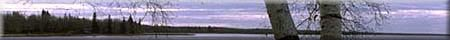
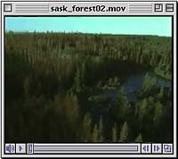

Scientific - Bionomial Nomenclature
 Foresters, ecologists, agrologists and researchers use scientific names to communicate about trees. Scientific names use Latin to describe the tree. Since the use of this language is universal throughout the science world, there is no confusion as to which species is being discussed. Latin words, when translated, indicate the appearance or use of the species. Common names, however can vary from location to location and can have different meanings. The scientific name lists the genus first, then the species second. For example, Populus tremuloides is the scientific name of poplar; Populus refers to the larger group (genus) that the tree belongs to and tremuloides to the species. Species is the smallest unit of classification commonly used; i.e. the group whose members have the greatest mutual resemblance. A species is a group of individuals able to breed among themselves but not with organisms of other groups. |
This two name scientific system of naming trees extends to other organisms and is known as binomial nomenclature. This system is a way to group organisms that are generally related to more specific relationships. New species that are discovered everyday on this planet are classified in this manner.
Common names vary from one place to another for the same organism leading to some confusion when they are used. For example, trembling aspen is also known as poplar, white poplar, quaking aspen, and trembling poplar. The common names of familiar plants often denote species.
Historically, Aboriginal cultures, living in harmony with the forest, developed what we now refer to as common names that varied from one language group to another. Through these names plants were classified differently than the scientific communityís system of classification. In classification, the scientific community considers the small constituent parts of plants and relates similarities in that way. The Aboriginal community considers the whole plant and its relationship to the ecosystem and man as part of the ecosystem. Interpreting an Aboriginal name may give some insight into the past relationships Aboriginal Peoples had with the species.